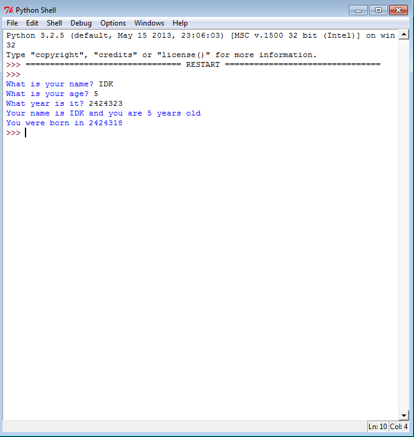
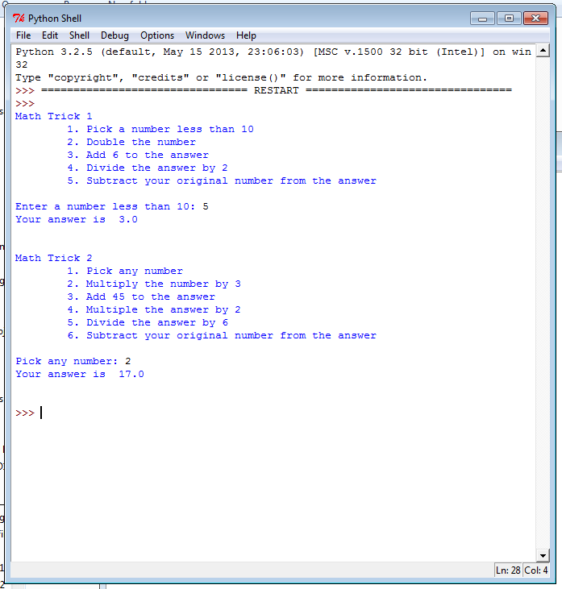
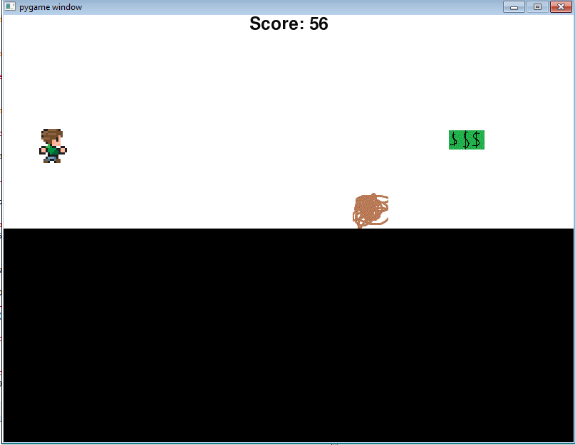
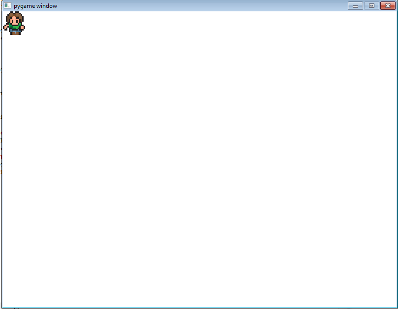
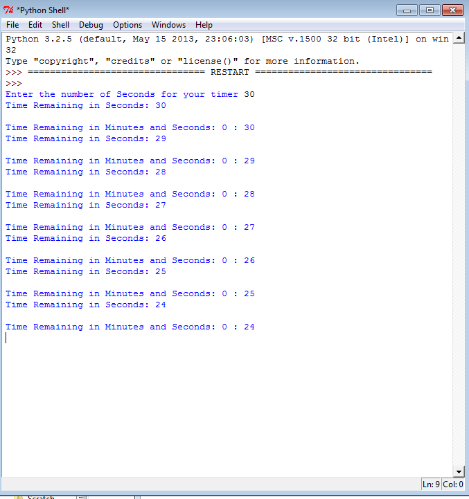
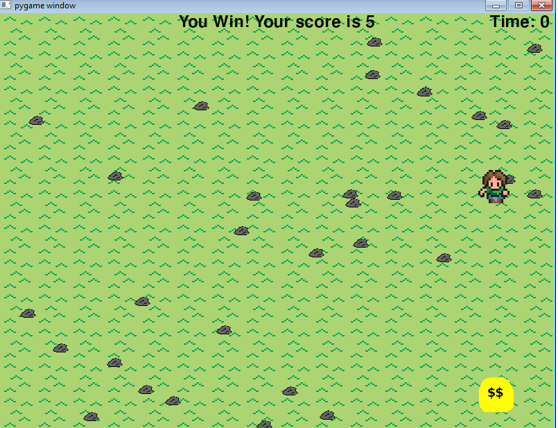
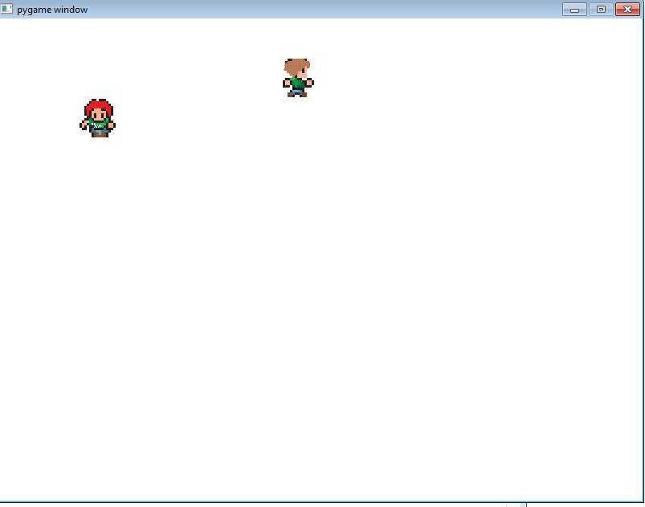
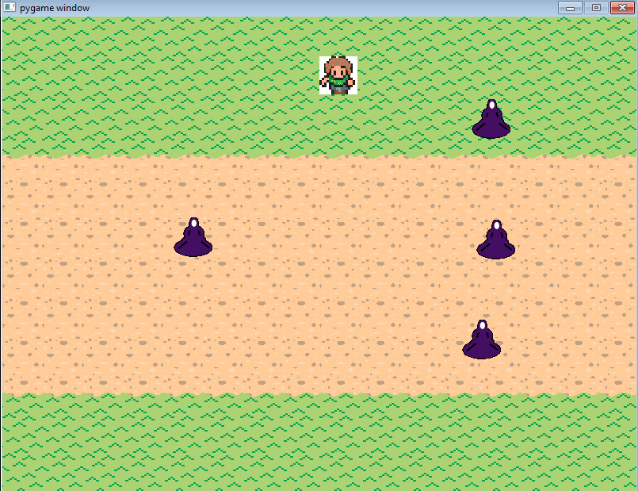

Unit 1
 
Description:
This unit was an introduction to python and it explained basic concepts. It introduced the Python shell and IDLE. We had to use basic inputs and work with mathematical operations and calculations. We had to use inputs to answer and ask questions. Overall, we were introduced to the basic dynamics of writing code in python.
Concepts Learned:
- Variables: This is where we could ask for an input that can be changed
- Printing: this is where we learned how to display text on the interpreter
- Strings: it is simply a string of characters that can be joined together by quotation marks. Other numerical inputs can be put into a string with str.
Unit 2
 
Description:
In this Unit, the main concepts we were introduced to were if statements. We were also introduced to and worked with pygame. We had to use class and runner files coercively to properly program a simple game. We learned that class files must be uploaded and they form the "blueprint" of the object. We had to write code that enables a character to move properly and quickly.
Concepts Learned
- If statements: They check if a condition is met and performs code if it is true
- Elif and Else: They provide an alternative if the condition in the if statement is false.
- Nested ifs: they are if statements within if statemnents
Unit 3
 
Description:
This unit focused on loops. It further explored the pygame methods. Early in the unit caesar cipher was introduced. For a majority of the unit we worked on a pygame assignment that made a game. We had to include a score and timer. We had to use while loops and for loops as well as random integers.
Concepts Learned
- While loop: a block of code associated with a condition, when the condition is true, the loop will always run the code.
- If/then loops: these can be on their own or placed within while loops. They help make sure the while loops perform the task correctly.
- Formatting within loops; we learned the (is(Condition)(direction) format and isFacing(direction). We learned symbols such as !(not) and &&(and).
Unit 4
 
Description:
In Unit 4, we continued to work with loops. We were introduced to new forms of loops and other ways to organize the loops. We were faced with new challenges that incorporated these new loops and organization methods. The main concepts we were introduced to were lists. We used lists to organize costumes of characters and organize code better.
Concepts Learned
- Lists: organizational tools in python which allow you to number and keep track of data.
- Indices: these are the numbering systems of the lists, they start at zero
- Tuples: they are lists that cannot be changed, they use parantheses